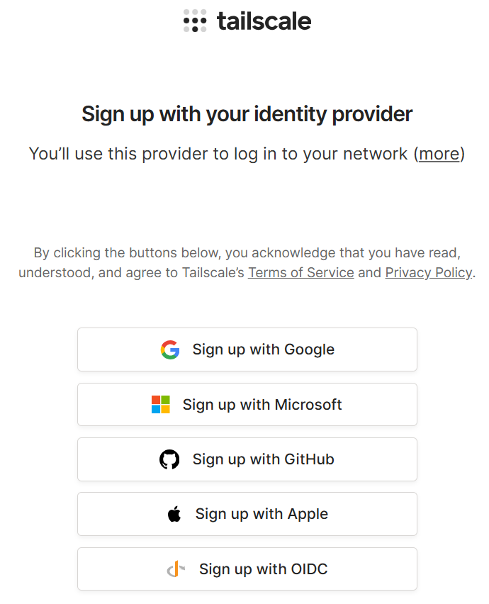
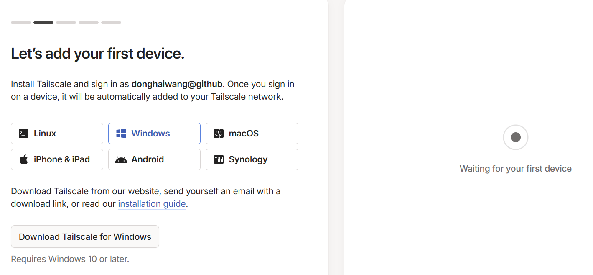
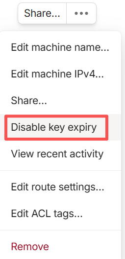
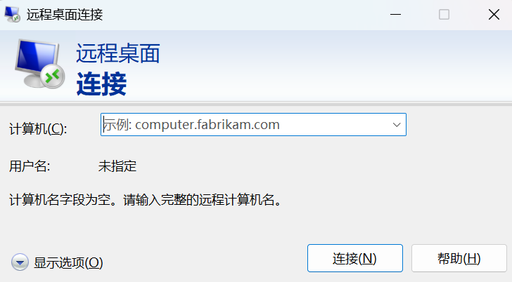
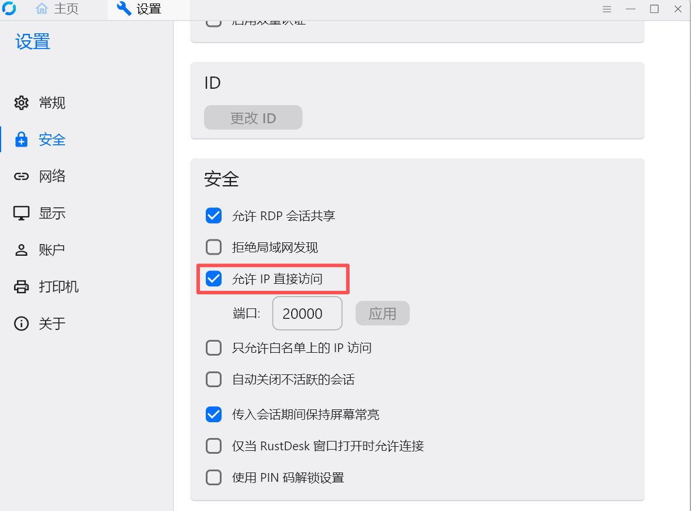
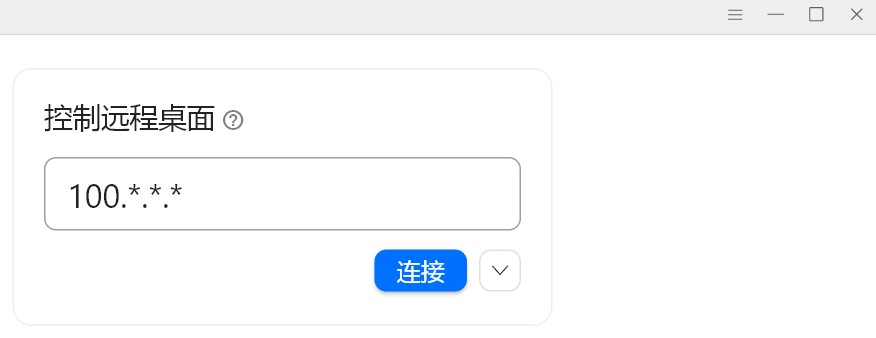

免费远程办公解决方案：tailscale+rustdesk
1. tailscale安装与配置
1.注册tailscale 并在需要远程登录的机器上下载tailscale 安装。

并将设备添加到同一网络中

3.添加后就可以在tailscale后台进行管理。 可以将key设置成永久，防止过段时间需要重新登录。

2. Windows远程登录

如果远程的机器为 Windows，只需要打开本地电脑的远程登录，使用 tailscale 的 IP 地址，输入Windows系统的用户名/密码即可登录，后面的“RustDesk配置与连接”就不再需要。
如果是 Ubuntu、Mac、Android、iOS等其他平台，请查看后面的“RustDesk配置与连接”。
附：RustDesk配置与连接
1.下载并安装RustDesk客户端。
2.控制端/被控端：打开RustDesk，设置->解锁安全设置->勾选“允许IP直接访问”

输入被控端的 IP 地址即可远程登录（注意这里是 Tailscale IP，不是台式机的IP ）。
